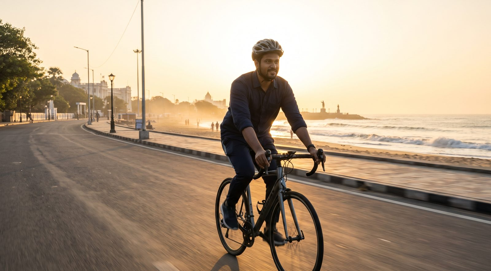
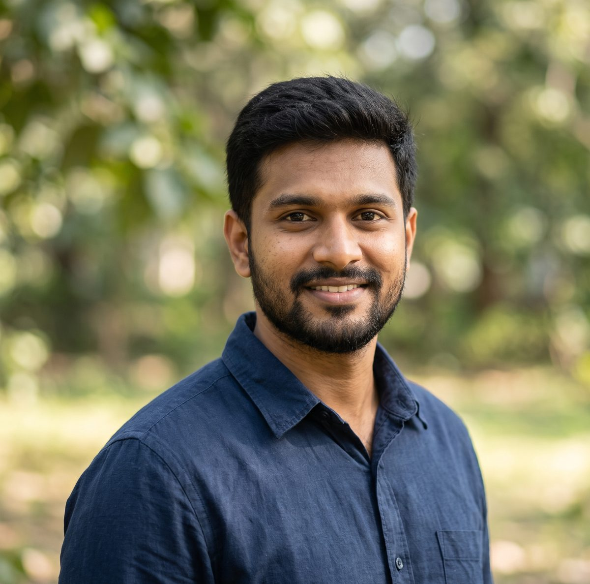
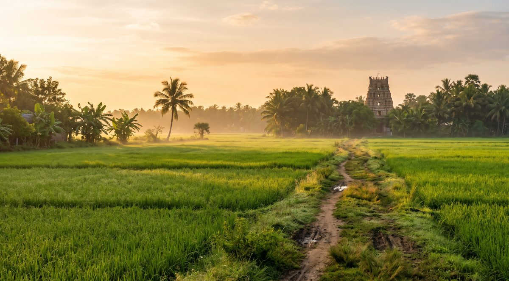
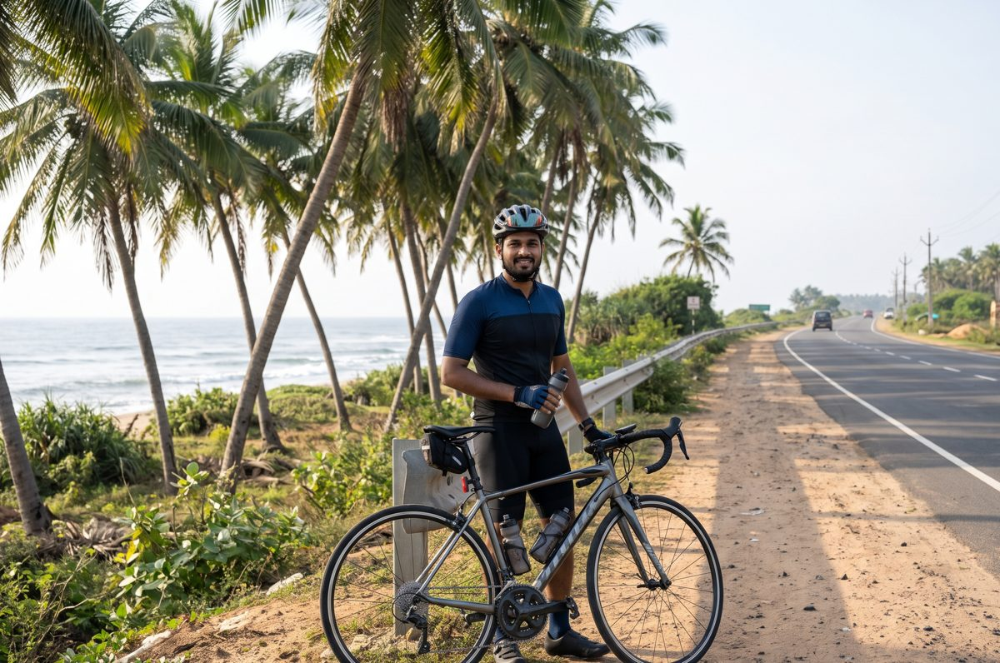
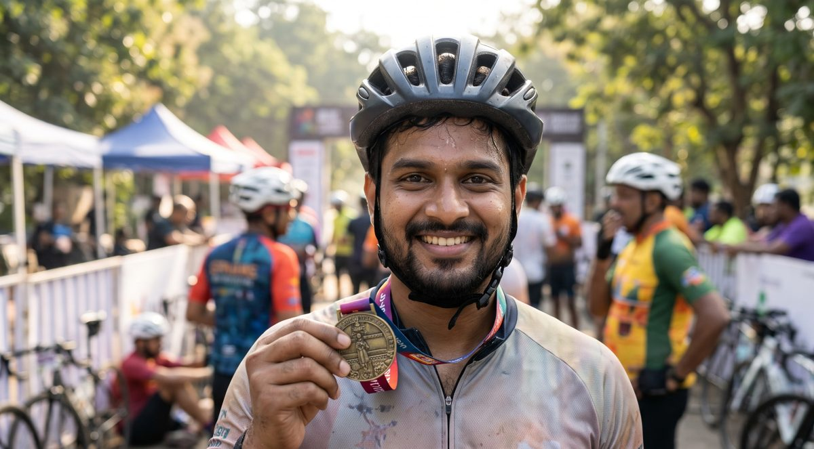
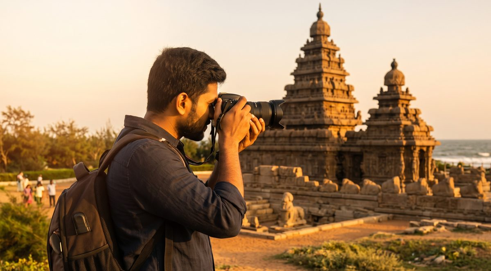
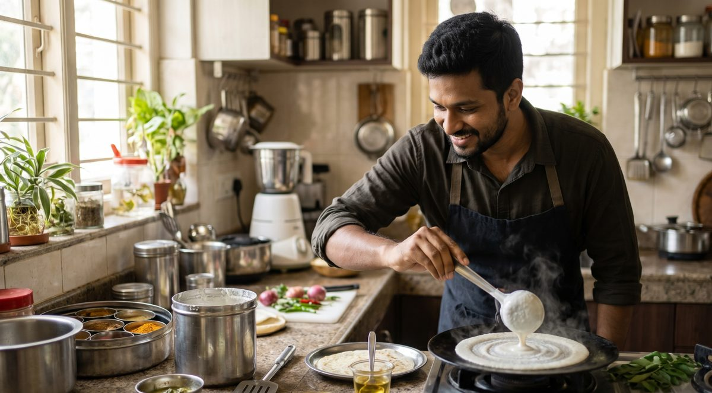
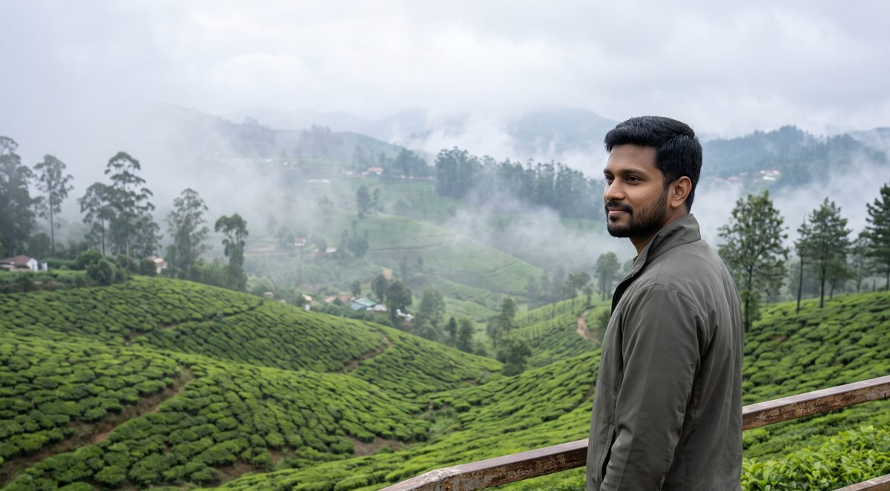

Marina Beach Rd · 06:12 AM
● Riding since 2019Software engineer by day. Cyclist, photographer and weekend dosa master the rest of the time.
I grew up between paddy fields in a small village near Thanjavur, where the temple tower was the tallest thing you could see. I moved to Chennai for my first job in software, and for two years the city felt too big and too fast.
A second-hand road bike changed that. Early rides on Marina Beach road turned into long Sunday rides down the East Coast Road, and a camera started coming along. Today I build backend systems at work and spend my mornings chasing sunrise light.
“ஊர் விட்டு வந்தாலும், வயல் வாசம் மனசுல இருக்கு.”
Village school, cycling 4 km to class every day on an old Atlas.

Joined as a junior developer. Learned Java, Kubernetes and how to survive OMR traffic.
Chennai to Mahabalipuram on the East Coast Road, 58 km, sea on the left the whole way.

200 km in 11 hours 40 minutes, inside the 13.5-hour cutoff. Tired legs, very happy face.

ECR and Marina at 5:30 AM, before the city wakes up.

Shore Temple, Thanjavur Big Temple, and the light that makes stone glow.

Crispy dosa, kara chutney and filter coffee, the way it was made back home.

“Ride early, shoot the light, eat well. The rest sorts itself out.”— Tej